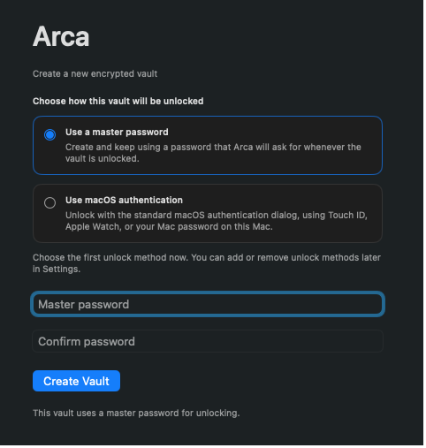
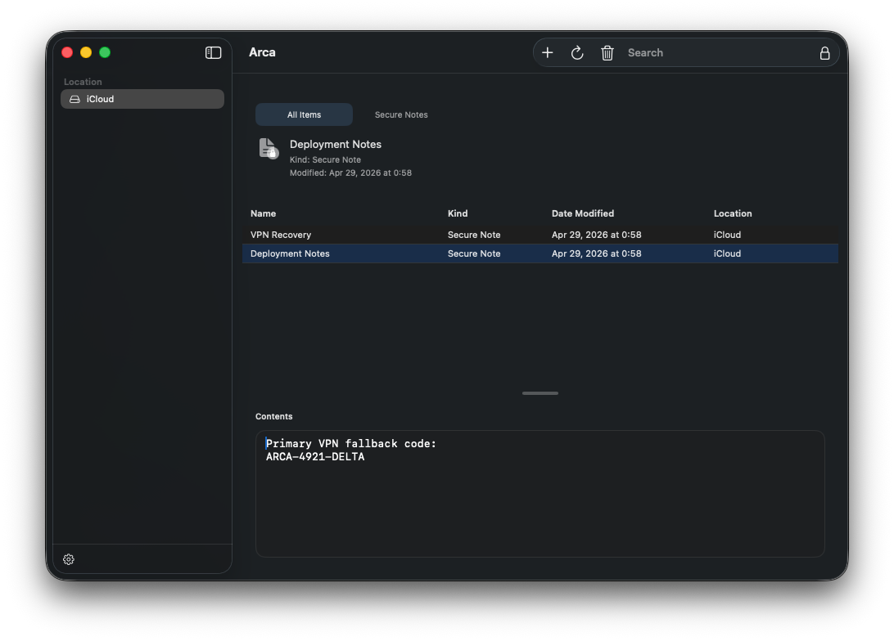

Encrypted note files
Each note lives in its own encrypted file, protected with AES-256-GCM and a master password-derived key.
Secure Notes, reintroduced for modern macOS
Arca is a focused replacement for the old Keychain Access Secure Notes workflow. One note per encrypted file, iCloud-friendly storage, and a native macOS utility feel.
Requires macOS. Distributed as a notarization-ready DMG.

Encrypted on disk
AES-256-GCM
Storage model
1 note = 1 file
Sync behavior
iCloud-friendly
Unlock flow
Password + biometrics
Built for familiar habits
If you kept sensitive snippets in Secure Notes because it was fast, private, and low-friction, Arca is designed for that exact workflow. Unlock, search, edit, lock, and move on.

Why Arca
Arca keeps the storage model simple so your notes remain inspectable, syncable, and resilient under real-world file conflicts.
Each note lives in its own encrypted file, protected with AES-256-GCM and a master password-derived key.
Conflicts are preserved instead of silently merged away, and broken files are skipped without taking the whole vault down.
Arca stores notes in an iCloud Drive-backed vault when available and falls back to local storage when it is not.
Search, edit, save intentionally, and lock again. No extra system for tags, collaboration, or rich text noise.
Download
Download the DMG, drag Arca into Applications, and move straight into your secure notes workflow on macOS.